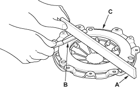
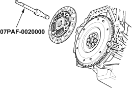
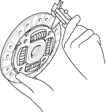
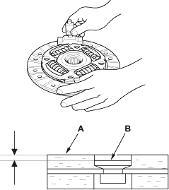

- Inspect for warpage using a straight edge (A) and feeler gauge (B). Measure across the pressure plate (C). If the warpage is more than the service limit, replace the pressure plate.
Standard (New):
0.03 mm (0.001 in.) max.
Service Limit:
0.15 mm (0.006 in.)

- Remove the clutch disc and special tools.

- Inspect the lining of the clutch disc for signs of slipping or oil. If the clutch disc is burned black or oil soaked, replace it.

- Measure the clutch disc thickness. If the thickness is less than the service limit, replace the clutch disc.
Standard (New):
8.3 - 8.9 mm
(0.33 - 0.35 in.) max.
Service Limit:
6.0 mm (0.24 in.)

- Measure the rivet depth from the clutch disc lining surface (A) to the rivets (B) on both sides. If the rivet depth is less than the service limit, replace the clutch disc.
Standard (New):
1.65 - 2.25 mm
(0.065 - 0.089 in.) max.
Service Limit:
0.7 mm (0.03 in.)
